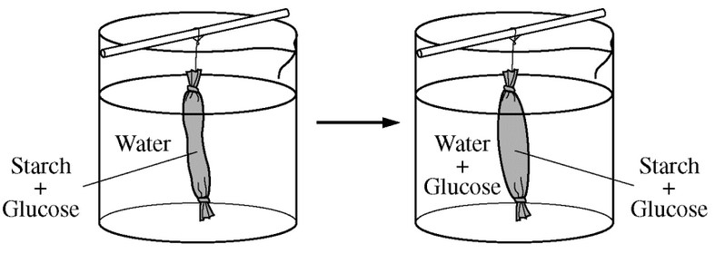

A common laboratory investigation involves putting a solution of starch and glucose into a dialysis bag and suspending the bag in a beaker of water, as shown in the figure below.

The investigation is aimed at understanding how molecular size affects movement through a membrane.
Which of the following best represents the amount of starch, water, and glucose in the dialysis bag over the course of the investigation?